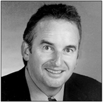

About the Author

B. Wayne Bequette is a professor of chemical engineering at Rensselaer Polytechnic Institute. His teaching and research interests are in process systems and control engineering. Applications of interest include biomedical systems (anesthesia and diabetes), pharmaceuticals (batch reactor scale-up and control), chromatography (protein separations), and fairly classical chemical processes, particularly those with interesting nonlinear behavior. Dr. Bequette is an associate editor of Automatica and the General Chair for the 2003 American Control Conference, and has served as the AIChE Director on the Board of the American Automatic Control Council. He is the author of Process Dynamics: Modeling, Analysis, and Simulation, also published by Prentice Hall (1998), and has published over 90 technical papers.
Dr. Bequette's career path can be viewed as either a series of random moves or a well-planned deterministic process. While completing a B.S. in chemical engineering at the University of Arkansas, he worked at Arkansas Eastman (handling utility and waste treatment problems) and Cosden Oil and Chemical (where he did process trouble shooting during the day, and played third base on a championship softball team at night). After his undergraduate studies, he was a process engineer at American Petrofina, where he had the chance to serve as a process operator during two work stoppages. This sparked his interest in process automation and control, enticing him to the University of Texas at Austin to earn a Ph.D. with a focus on multivariable control system analysis and design. He spent a year as a visiting lecturer at the University of California at Davis (developing a taste for extra dry cappuccinos) before becoming a professor at Rensselaer in 1988. While at Rensselaer, he has had the good fortune to serve as the advisor for ten Ph.D. and four M.S. students, in addition to teaching chemical process dynamics and control to at least 900 undergraduate students. In recent years, he has had little time for softball and pole-vaulting, devoting more time to teaching applied trajectory analysis to his son's T-ball team and helping his daughter apply corrective feed-back action to an open-loop unstable transportation device (bicycle).
|